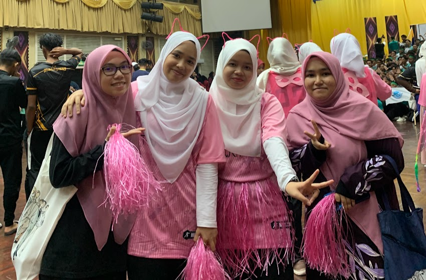

.jpg)
.jpg)

At Kem Park Su Chalet
im working as a facilitator for about 3 month at Kem PakSu Chalet, Jeram Pasu.This camp were so enjoyable, where each school will experience the extreme activities, such as jungle trekking, 'Rempuh halangan', night walk, foot marching competition, learn to do dressings, and of course on how to be more discplined which we prioritize time management, which all participation have to complete each task and activities with the times given. This will make they realised how important the time was. This work were enjoyable because i can spend my leasure time with many people and can learn many new things, which make myself want to be a better person eveyday, and want to be a productive person.
for Kolej Tunku Abdul Rahman
joining this one because my friends asked me to and it were enjoyable! we practiced it for weeks, and got second place 2 for that! The themes is powerpuff girls, so its look cute with pink. overall, it was such a good experience to me, bacause i can get to know others and share the same moments with them!